Jonathan Shimwell
We present a systematic survey of neutron activation for all stable elements (Z = 1–83) under conditions representative of a deuterium-tritium (DT) fusion power plant first wall. Using OpenMC's transport-free material depletion capability, each element is irradiated with the HCPB first-wall neutron spectrum (LLNL-616 group structure) at 1 MW/m² wall loading for 40 full-power years, followed by cooling periods from shutdown to 100 years. We report specific activity (Bq/kg) and photon contact dose rate (Sv/hr) at ten cooling times, visualized as color-coded periodic tables. The elemental maps are validated against established reduced-activation criteria. The results provide an open-source, reproducible screening tool for fusion material selection.
Structural materials in a DT fusion power plant are subjected to intense neutron irradiation dominated by the 14.1 MeV fusion peak. Transmutation of stable nuclei into radioactive products creates two practical challenges:
The concept of "reduced activation" structural materials was introduced in the late 1980s and has since guided the development of fusion-specific alloys such as V–4Cr–4Ti and SiC/SiC composites. The underlying principle is straightforward: avoid alloying elements whose isotopes produce long-lived or high-dose activation products under 14 MeV neutron irradiation.
Despite decades of work, the reduced-activation criteria are typically presented as tables or lists of acceptable and problematic elements, derived from detailed calculations with dedicated inventory codes. These results are authoritative but not always accessible or easy to update with new nuclear data libraries.
In this work, we take a complementary approach: a systematic, element-by-element
activation screening using OpenMC's transport-free material
depletion capability (Material.deplete()), which was contributed to OpenMC
by the author of this report (PR #3420). By irradiating each element
independently and mapping the results onto periodic tables color-coded by
activity and dose rate, we produce an intuitive visual tool for material
selection. The methodology is fully open-source and reproducible, requiring
only OpenMC and a depletion chain file.
OpenMC (v0.15.3+) provides a Material.deplete() method that evolves nuclide
densities under an externally specified multigroup neutron flux without
requiring a full Monte Carlo transport simulation. Internally, the method:
MicroXS.from_multigroup_flux().PredictorIntegrator) with the IndependentOperator.This approach is well-suited for parametric activation studies where the neutron spectrum is known a priori and self-shielding feedback is negligible — conditions that hold for elemental screening.
Each element (Z = 1–83, excluding Tc and Pm which have no stable isotopes, 81 elements total) is represented as a pure material at 1 g/cm³ with natural isotopic composition. Since specific activity (Bq/kg) and contact dose rate (Sv/hr in the semi-infinite slab model) are independent of density in this transport-free framework, the density choice is arbitrary.
The irradiation parameters represent a generic DEMO-class fusion power plant first wall:
| Parameter | Value |
|---|---|
| Neutron spectrum | HCPB first-wall |
| Energy group structure | LLNL-616 (616 groups) |
| Wall loading | 1.0 MW/m² |
| Scalar flux | 4.4 × 10¹⁴ n/cm²/s |
| Irradiation time | 40 full-power years |
| Cooling times | shutdown, 1 h, 1 d, 1 wk, 1 mo, 1 yr, 5 yr, 10 yr, 50 yr, 100 yr |
The neutron spectrum is the HCPB (Helium-Cooled Pebble Bed) first-wall reference spectrum, shown in Figure 1. The spectrum exhibits the characteristic 14.1 MeV DT fusion peak, a broad scattered/evaporation component in the 0.1–10 MeV range, and resonance structure at intermediate energies.
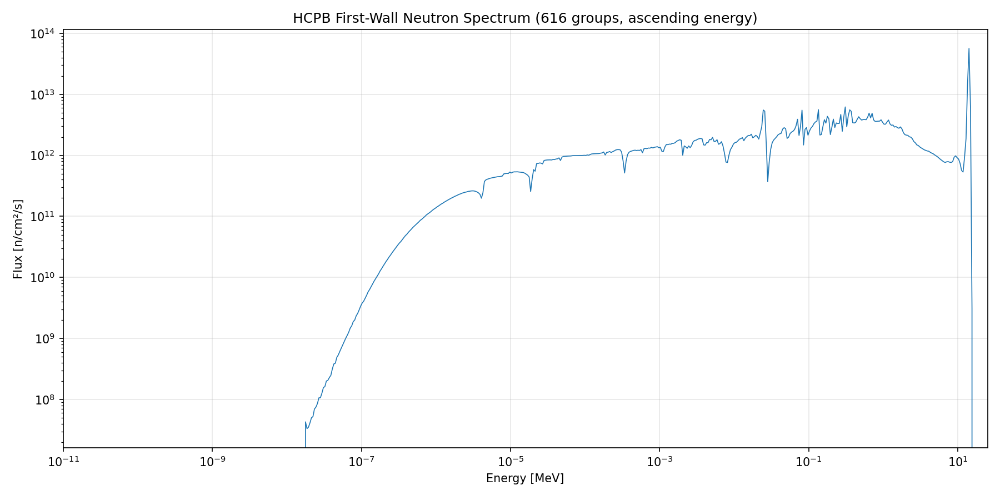
Figure 1: HCPB first-wall neutron spectrum used for the activation screening. 616 energy groups (LLNL-616 structure), spanning 10⁻⁵ eV to 20 MeV.Two quantities are computed at each cooling time:
Material.get_activity(units='Bq/kg').Material.get_photon_contact_dose_rate(dose_quantity='effective'),
implementing the semi-infinite slab methodology with ICRP-116 dose
coefficients and a build-up factor of 2.0.For each metric, the dominant contributing nuclide is also recorded.
Figures 2–5 show the specific activity periodic tables at key cooling times.
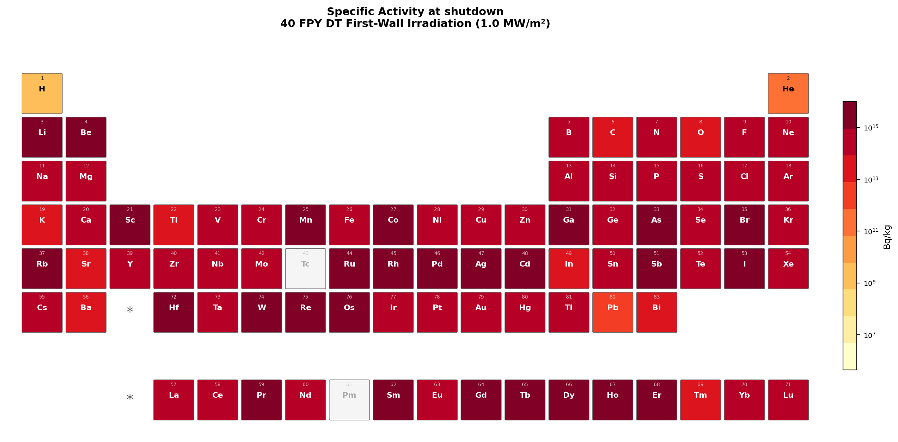
Figure 2: Specific activity (Bq/kg) at shutdown.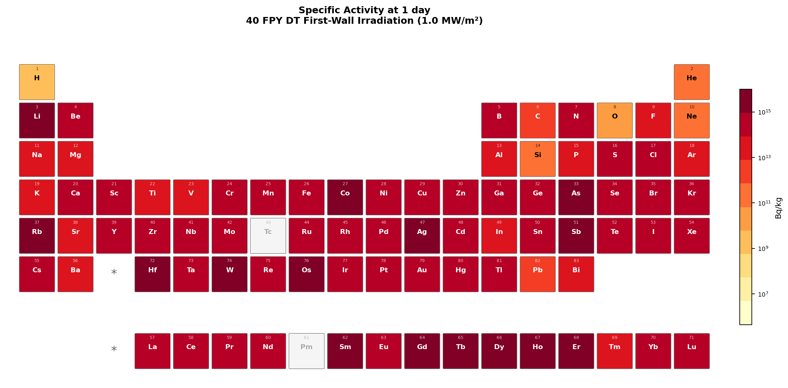
Figure 3: Specific activity (Bq/kg) at 1 day cooling.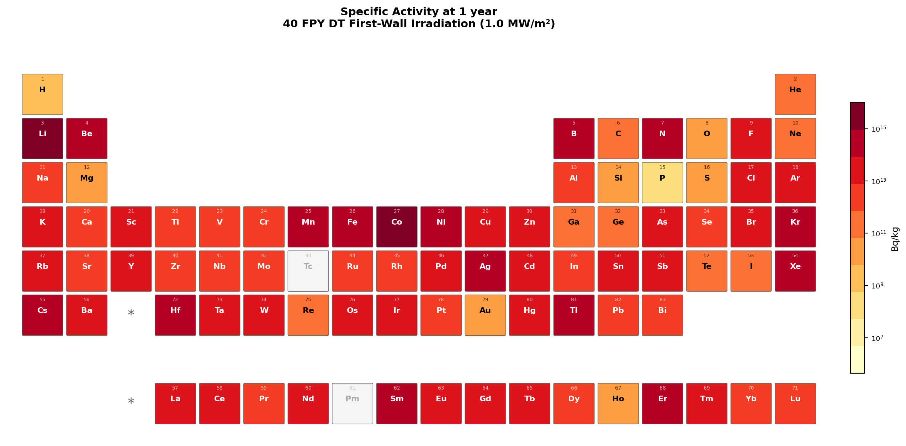
Figure 4: Specific activity (Bq/kg) at 1 year cooling.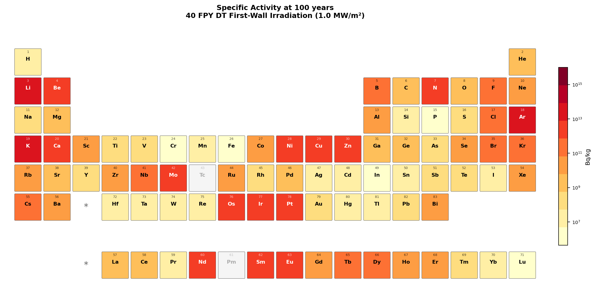
Figure 5: Specific activity (Bq/kg) at 100 years cooling.Figures 6–9 show the contact dose rate periodic tables at the same cooling times.
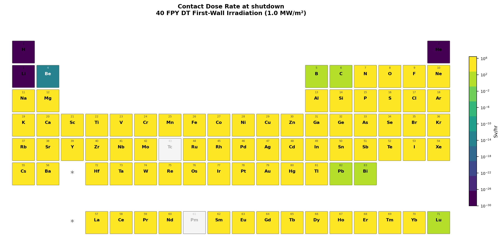
Figure 6: Contact dose rate (Sv/hr) at shutdown.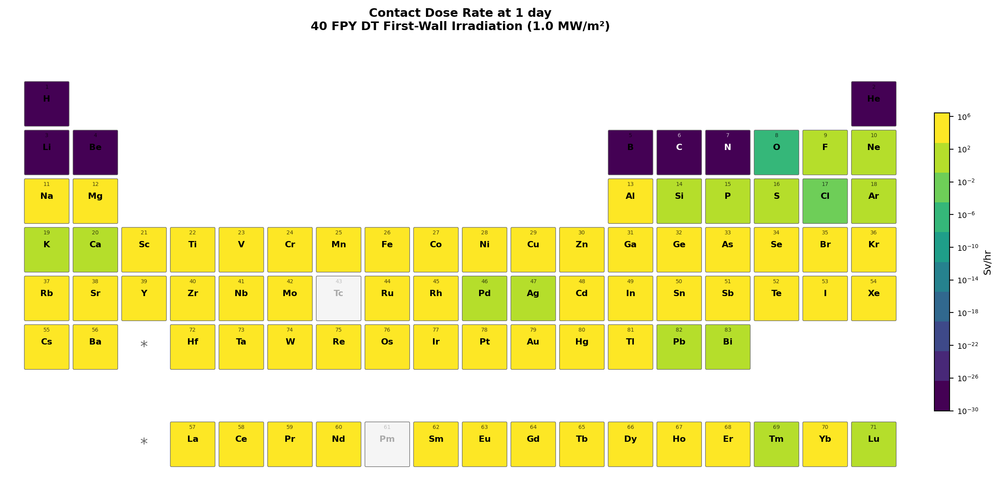
Figure 7: Contact dose rate (Sv/hr) at 1 day cooling.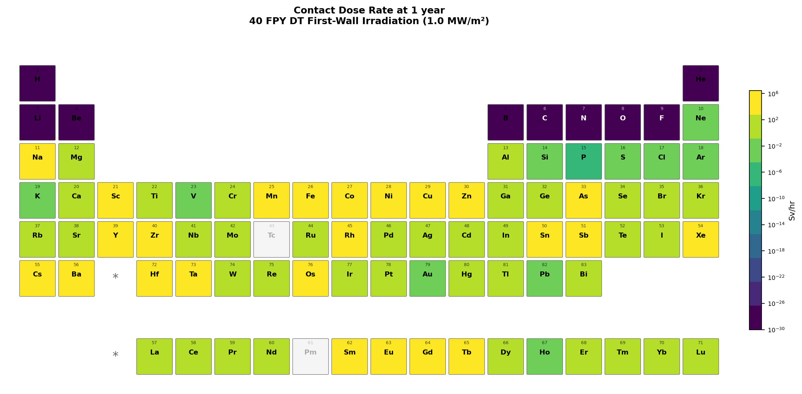
Figure 8: Contact dose rate (Sv/hr) at 1 year cooling.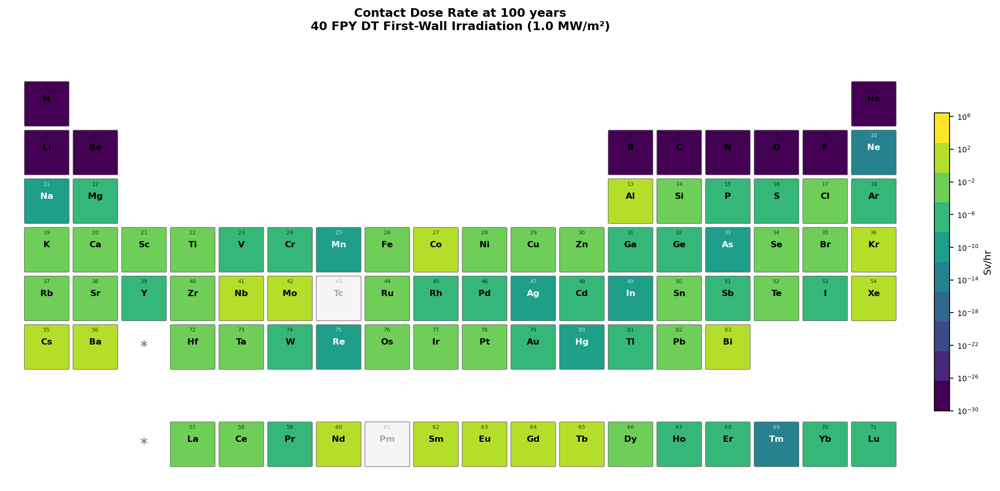
Figure 9: Contact dose rate (Sv/hr) at 100 years cooling.The periodic table heatmaps reveal several patterns consistent with established reduced-activation knowledge:
Figures 10–12 identify elements that appear in the top 10 worst performers at any cooling time, for activity, dose, or both.
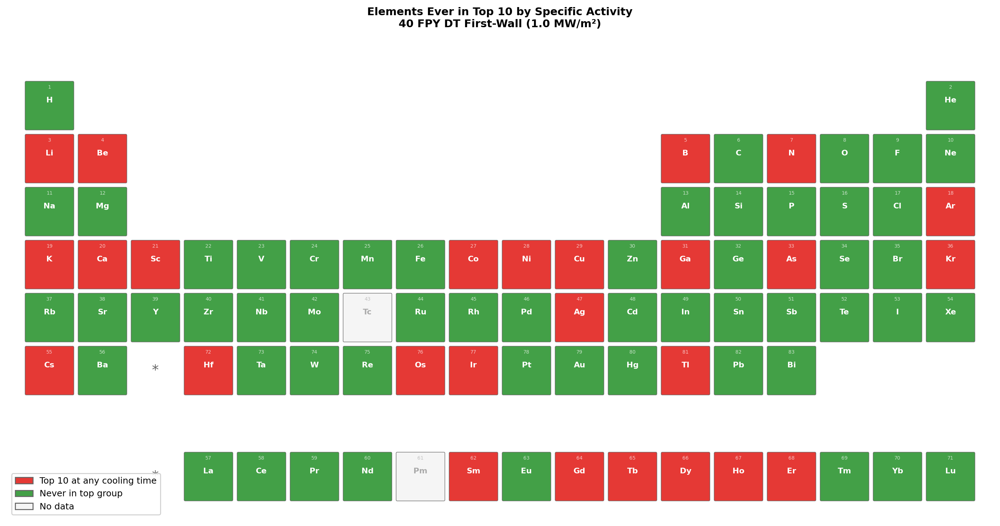
Figure 10: Elements ever appearing in the top 10 by specific activity.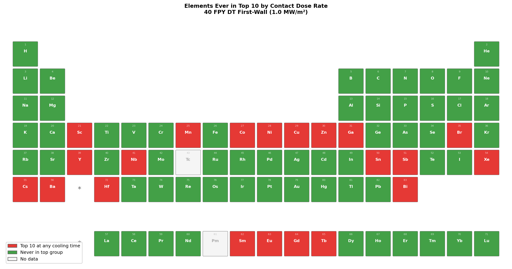
Figure 11: Elements ever appearing in the top 10 by contact dose rate.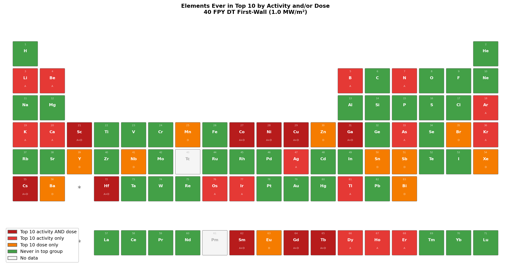
Figure 12: Elements ever appearing in the top 10 by specific activity (red), contact dose rate (orange), or both (dark red) at any cooling time. Green elements are never in the top 10 for either metric.The ranking of elements changes significantly with cooling time:
[Table: Top contributing nuclides at 1 year and 100 years for key structural
elements — to be populated from element_data.json]
The periodic table heatmaps directly inform alloy design by providing an activation penalty factor for each element. For example, if element A has 100× the specific activity of element B at 100-year cooling, then 0.1 wt% of A in a steel contributes the same waste burden as 10 wt% of B. This framing is immediately actionable for metallurgists selecting alloying additions.
Impurity specifications are also highlighted: trace elements like Co and Ag, even at ppm levels, can dominate long-term activation. The maps make this visually clear and may support more stringent impurity specifications for fusion-grade materials.
We have demonstrated a systematic, open-source approach to fusion material activation screening using OpenMC's transport-free depletion capability. The element-by-element periodic table visualization provides an intuitive tool for material selection that:
The scripts and data are provided as supplementary material. Users can regenerate the analysis with different spectra, irradiation conditions, or nuclear data libraries by modifying the input parameters.
# 1. Generate elemental activation data (test: 10 elements)
python generate_data.py --test \
--chain /path/to/chain-endf-b8.0.xml \
--cross_sections /path/to/cross_sections.xml \
--spectrum hcpb_fw_616.txt
# 2. Plot the input spectrum
python plot_spectrum.py
# 3. Generate periodic table visualizations
python plot_periodic_table.py
# Full run (all 81 elements):
python generate_data.py \
--chain /path/to/chain-endf-b8.0.xml \
--cross_sections /path/to/cross_sections.xml \
--spectrum hcpb_fw_616.txt
python plot_periodic_table.py
Requirements: OpenMC >= 0.15.3, numpy, matplotlib, ENDF/B-VIII.0 cross sections and depletion chain, HCPB-FW spectrum file.
Other neutron spectra are available from the
reference input spectra
and can be used in place of the HCPB first-wall spectrum by passing a different
file to the --spectrum argument.